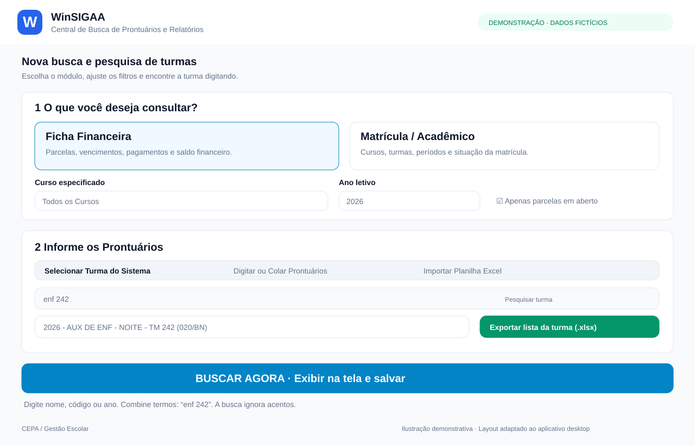

DESKTOP · PYTHON
WinSIGAA — Central de Busca
Pesquisa acadêmica e financeira, filtros por turma, consultas por prontuário e relatórios em Excel.
Conhecer projeto ↗DESENVOLVIMENTO · AUTOMAÇÃO · SISTEMAS
Desenvolvo soluções para simplificar rotinas administrativas e educacionais, com foco em usabilidade e eficiência.
Conhecer projetos ↓PROJETOS SELECIONADOS

DESKTOP · PYTHON
Pesquisa acadêmica e financeira, filtros por turma, consultas por prontuário e relatórios em Excel.
Conhecer projeto ↗Emissão de contratos ✓
Assinatura pelo celular ✓
Documentos PDF + QR Code ✓
WEB · NEXT.JS
Sistema funcional e pronto para produção, com gestão de contratos, assinatura digital e verificação de documentos.
Conhecer projeto ↗Experimentar demonstração ↗Aplicação ↗Demo interativa com dados fictícios e ações simuladas. Explore contratos, modelos, filtros e assinatura digital.
SOBRE
Projetos construídos para necessidades concretas. O código-fonte e os dados institucionais são preservados em ambientes privados; aqui compartilho os resultados e as funcionalidades.